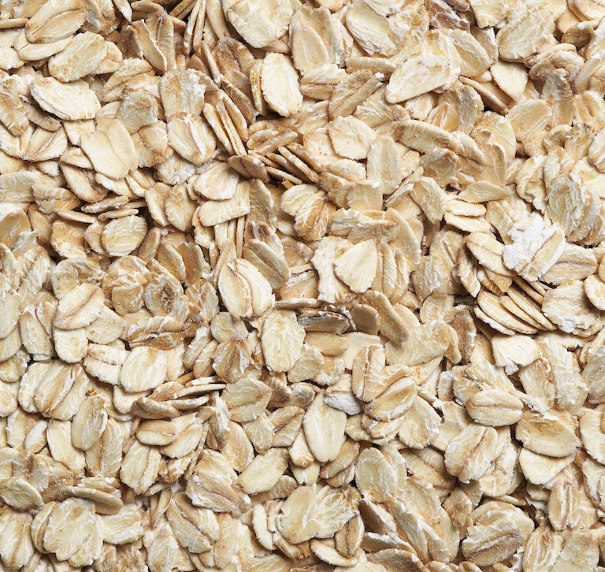

Porridge

Oats
The most exciting breakfast of them all, porridge. Hurray.
Ingredients:
- Handfull of oats
- A bit of water
- Pinch of salt
- Etc...
Steps
- Horse the oats and water into a pot
- Cook for a bit
- Eat when ready, questioning yourself why you're having porridge
- To make it less miserable, add some other bits to it
Back Home